WANG
WANGEDITORIAL DESIGN / INTERACTIVE EXPERIENCE
A Measure of
Daylight.
A publication and interactive light portrait study on how daylight, architecture and personal preference shape the feeling of a space.
PHOTOGRAPHY
INTERACTIVE WEB
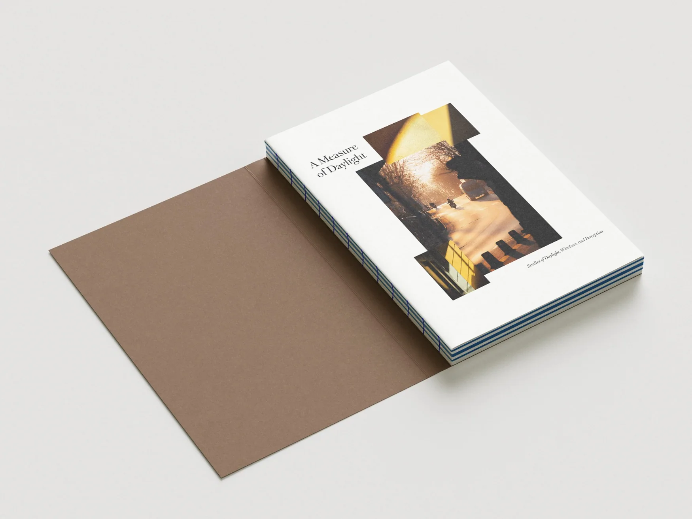
01 / THE IDEA
Light changes the way a room feels.
A Measure of Daylight began with a simple question: why can the same room feel entirely different as light changes? The publication observes thresholds, windows, reflections, changing weather and the moment daylight enters a space.
The companion website invites visitors to adjust light intensity, softness, openness, direction and surface colors to create a personal light portrait. It turns the book's observations into something visitors can explore themselves.
02 / THE PUBLICATION
Tracing daylight in print.
A photo-led editorial sequence moves from outside to inside, from filtered light to changing exposure and the human body.
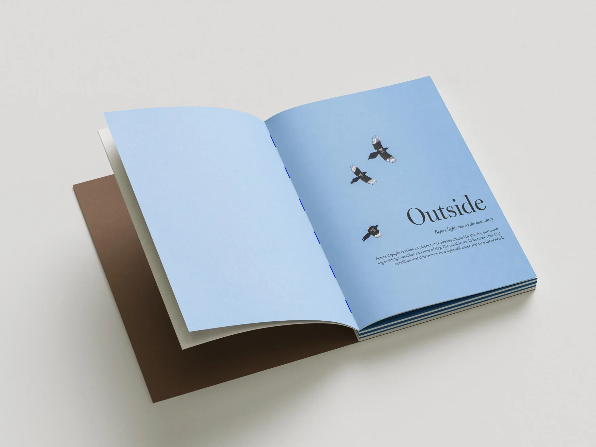
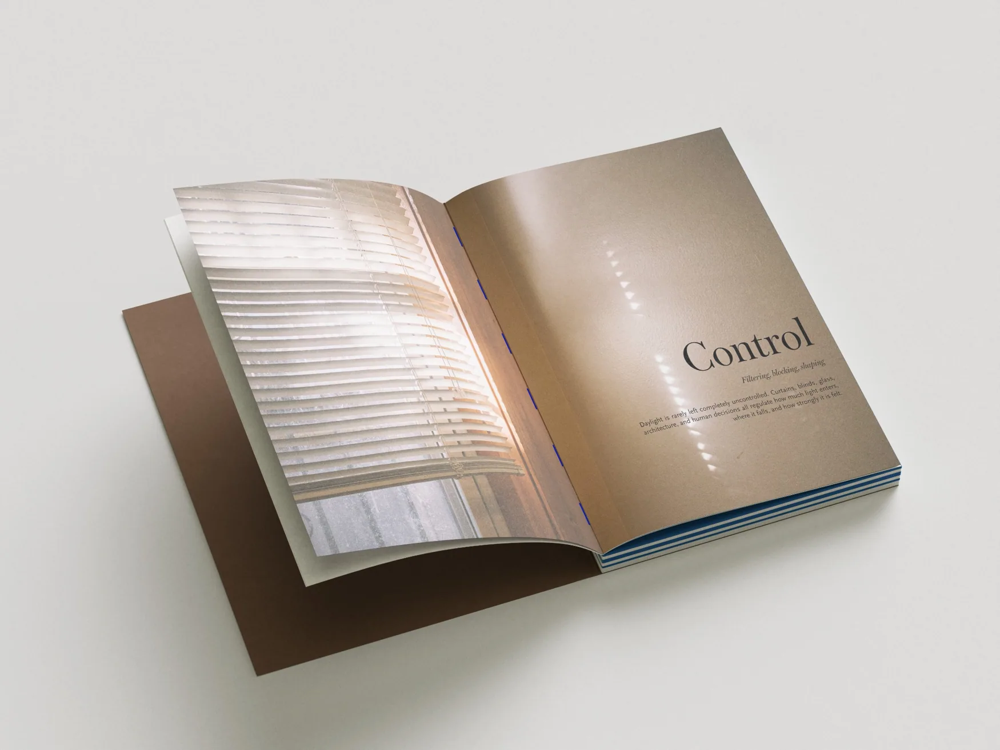
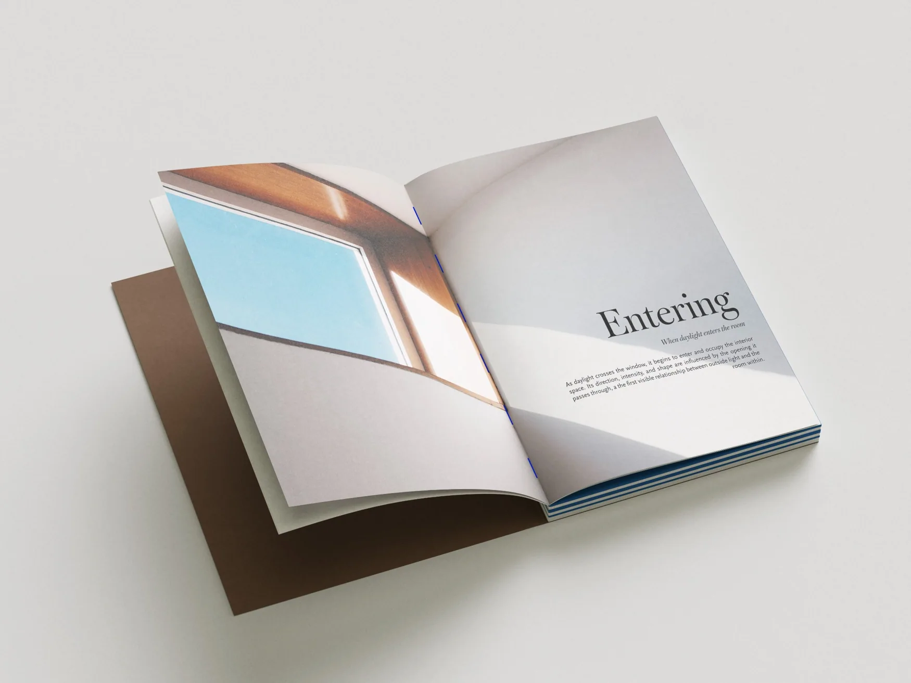
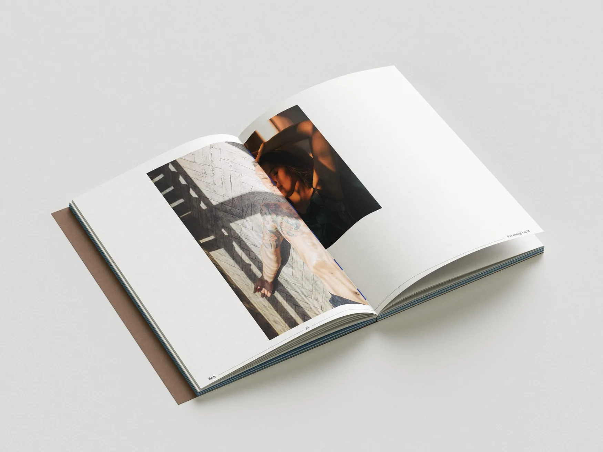
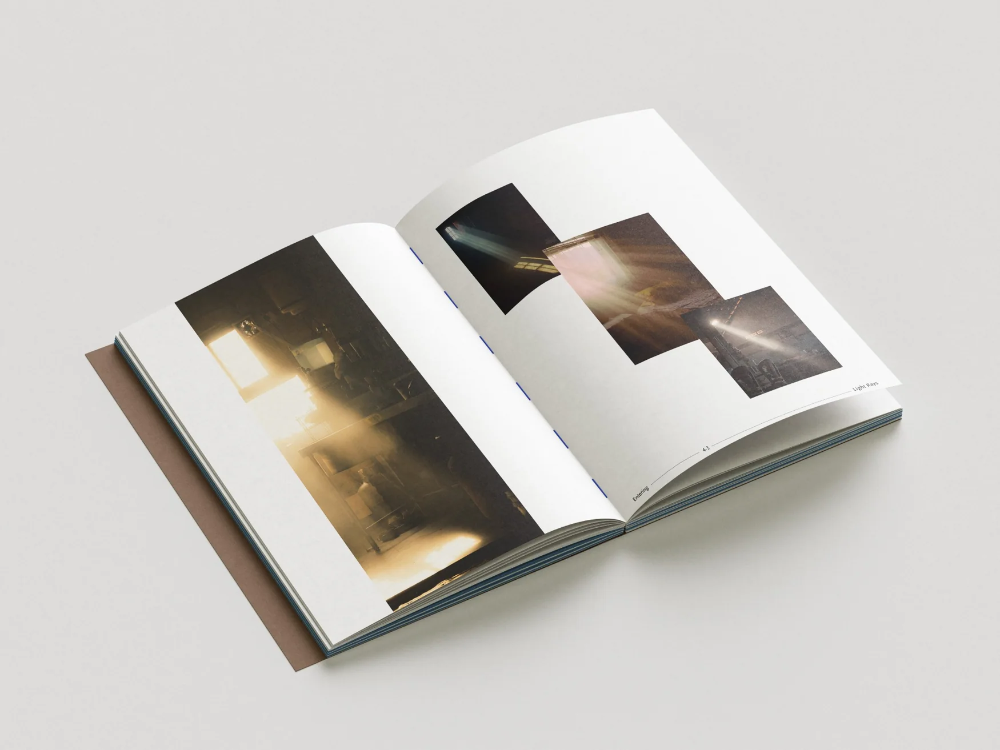
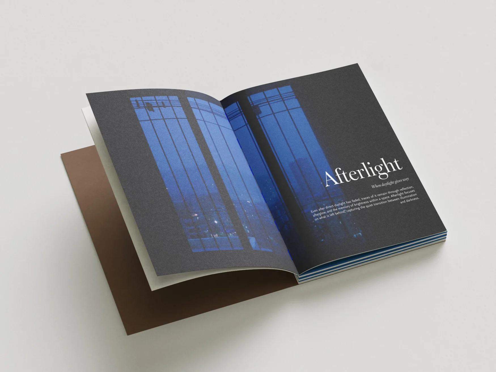
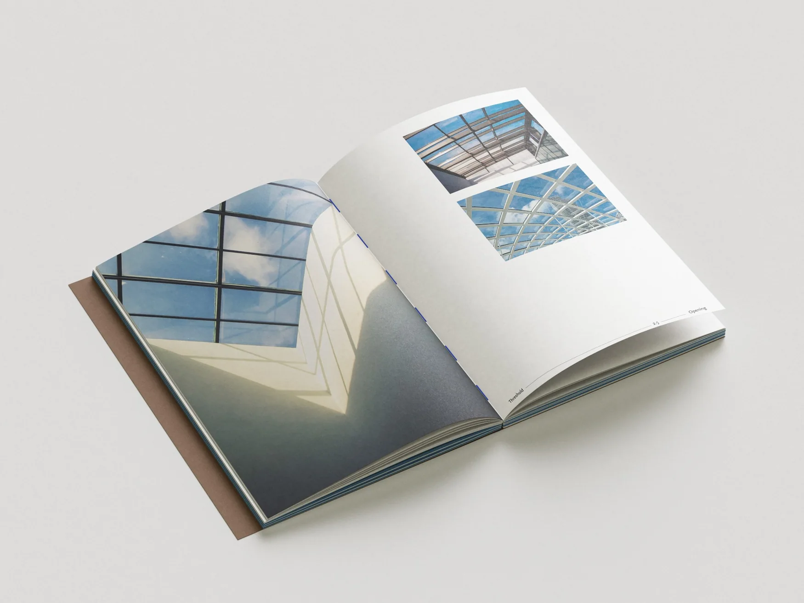
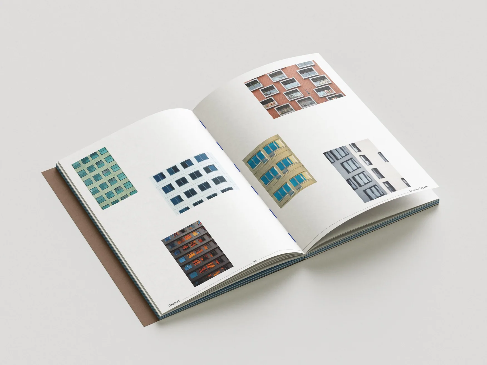
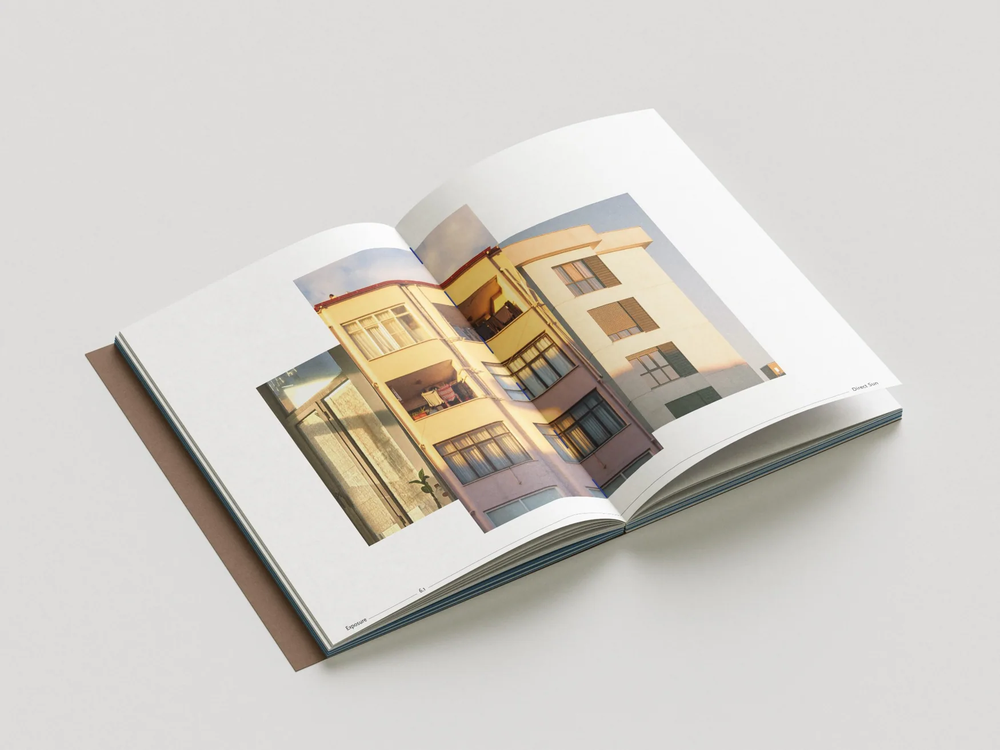
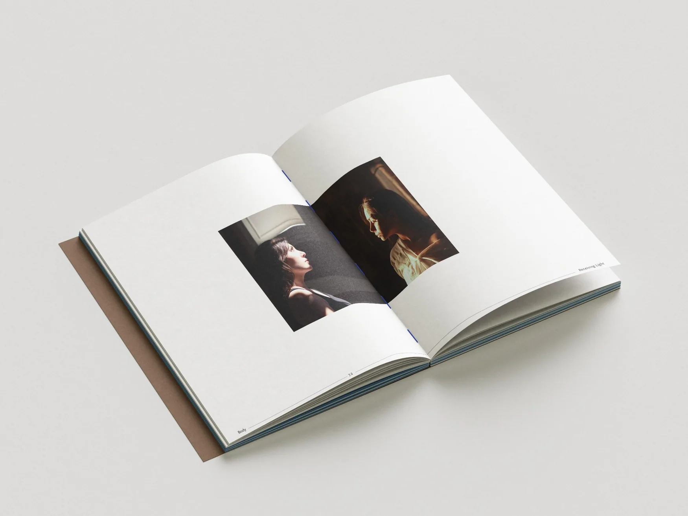
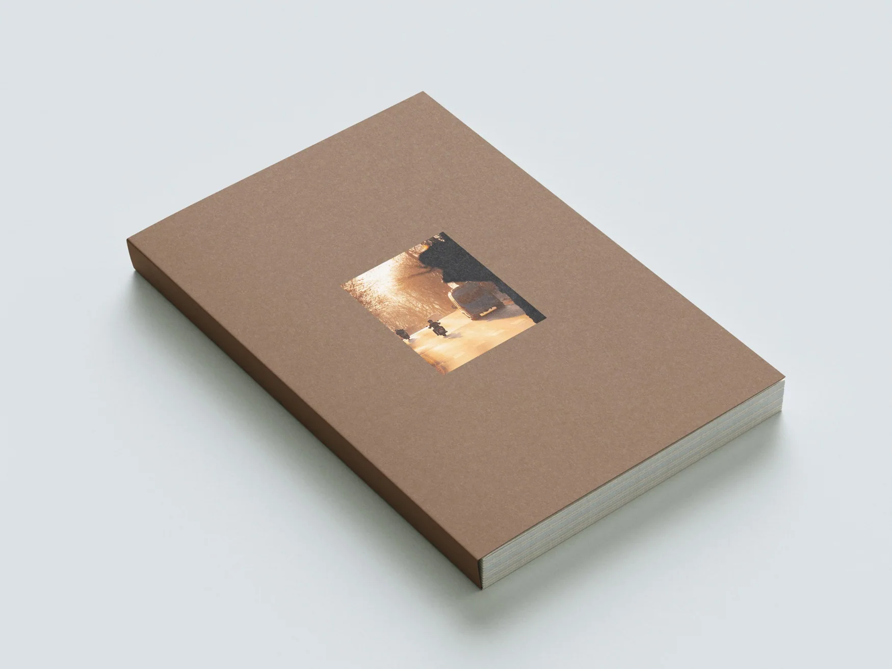
03 / THE INTERACTIVE EXPERIENCE
Find your own daylight.
This is the original interactive website. Change daylight qualities and surface colors to create your light portrait; save your choices or explore the shared gallery.
04 / PROCESS DOCUMENTATION
An experience in motion.
A short screen recording documents the visual exploration and interactions in the project. The live website above is the full experience.